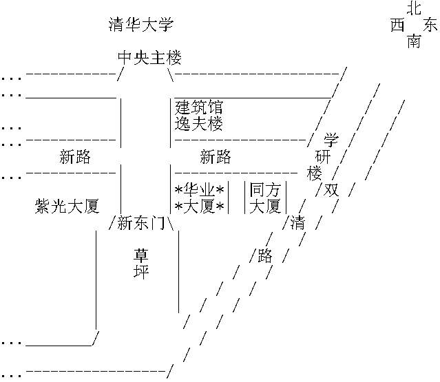

【AKA】讲座 —— CVS 协同开发环境
主题：CVS 协同开发环境
时间：6 月 9 日 (星期六)下午 2:30 PM - 5:00 PM
地点：清华大学东门外，华业大厦5楼2509房 华业大厦 地图：（见下）
主讲人：杨锦方
内容简介：
=========
CVS（Concurrent Versions System）是一个强大而复杂的现代版本控制系统，是计算机辅助软件工程的核心工具。它是开放源代码组织使用的标准版本控制系统，并且在全球中小型软件企业中广为使用。风靡全球的Linux操作系统就是在大型分布式CVS系统上开发成功的。
CVS是软件工程的利器，高效保护软件资源。它能保存源代码的全部历史、保存编译、运行环境、系统数据、测试系统、软件文档的全部版本。帮助开发者管理所有的版本，极大的提高效率，节省成本。
CVS是小组开发必备工具，有效隔离各开发者的工作，各分支完成后进行合并，消除干扰。CVS支持高效多分支并行开发，提供多种途径帮助小组成员之间的版本同步、开发通信，辅助解决代码冲突，大大提高协作效率。
CVS具有高价值。全球最著名的软件工程软件提供商Rational Software的ClearCase是CVS的替代产品，比CVS稍有增强，而ClearCase非常昂贵，客户端$3000/ license，还有昂贵的培训、支持。尽管昂贵，ClearCase仍是Rational公司最畅销的软件之一。
/*************************************************************/
研发中心地图:

(在清华大学东门外，从主楼，同方大厦等地询问"华业大厦"地点均可问清. 如果是乘车前来, 有一站叫双清路,正好在同方大厦前面. 讲座地点在华业大厦五楼，可以询问保安，不过其实直接上去更方便。进华业大厦大门后，
往左右15米左右均有向上的电梯，也有楼梯。上华业大厦 5 楼 2509 房间。 中心联系电话：电话： 62770670，如果实在找不到，就打电话咨询。)
-------
自由、协作、创造 — 为了明天